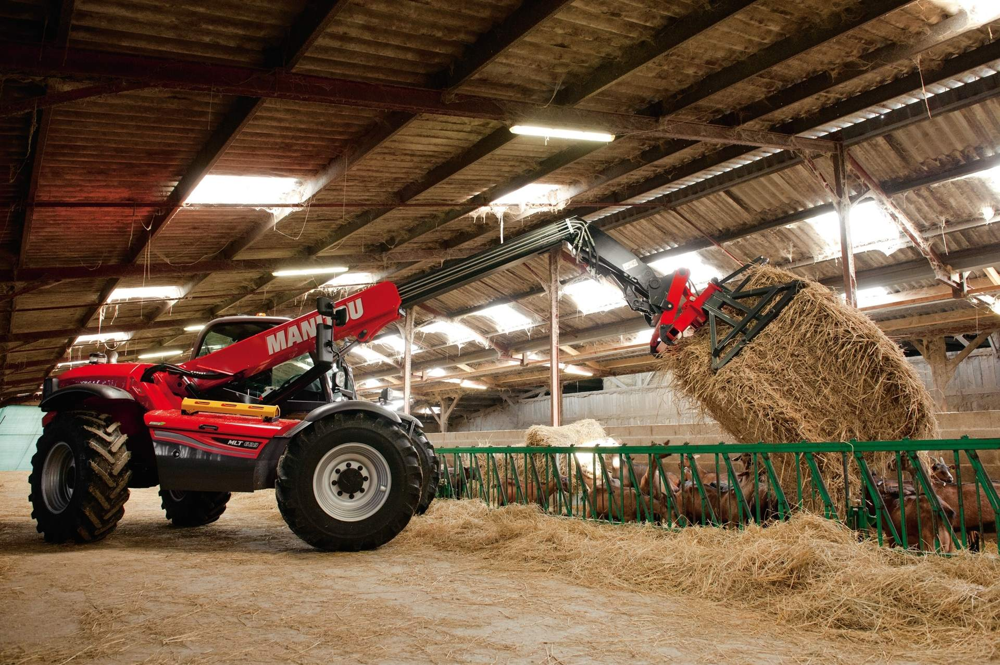
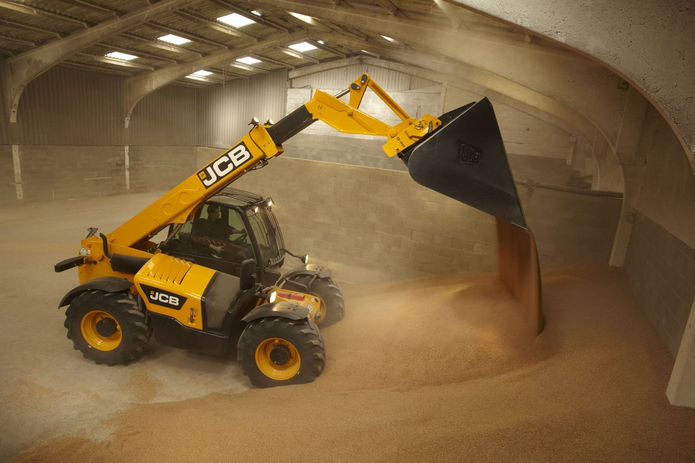
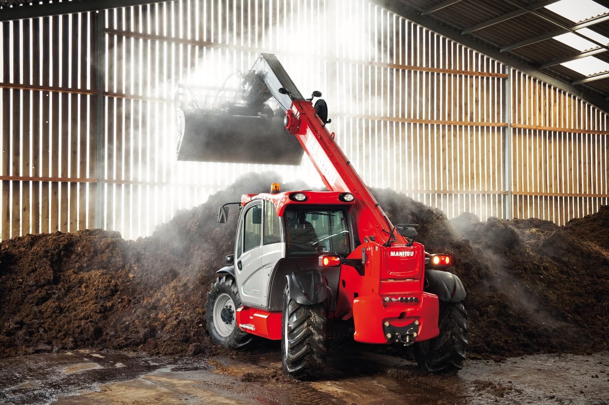
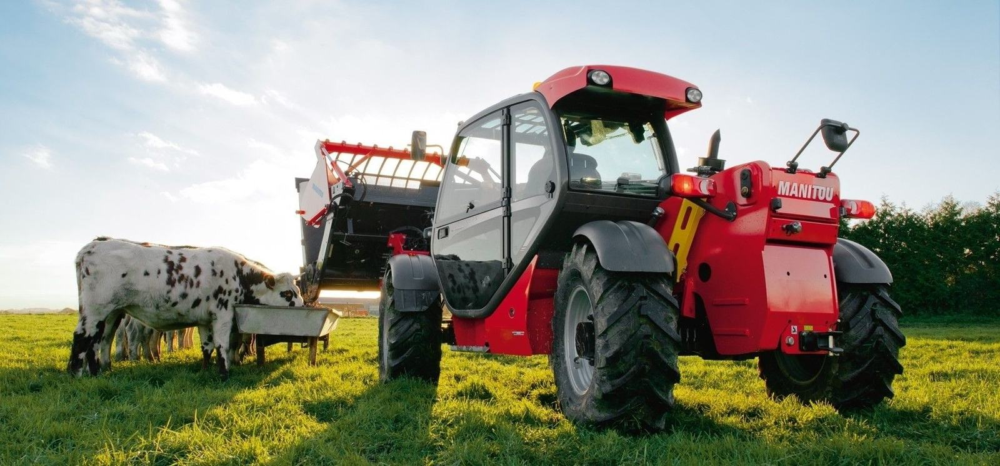

Головна/Блог
Блог про Manitou та JCB
Поради з обслуговування, типові несправності та запчастини для телескопічних навантажувачів — від інженерів, які щодня ремонтують цю техніку.
Зателефонувати

Нова статтяЯкі фільтри міняти на JCB 531-70 і 535-95 і як часто?Фільтри JCB Loadall 531-70 і 535-95: оливний, паливний, повітряний, гідравлічний, трансмісійний і фільтри кабіни — що вони захищають і коли їх замінювати.Читати статтю →
ЩЕ СТАТТІ
Попередні публікації

Чому Manitou не заводиться в мороз і що робити?Свічки розжарювання, загусле паливо, розряджений акумулятор чи вода у фільтрі: чому Manitou не заводиться в мороз і як його безпечно запустити.Читати →

Як підготувати телескопічний навантажувач до зими: 7 пунктівЩо перевірити на Manitou чи JCB до морозів, щоб техніка заводилась зранку і не стала посеред зимових робіт.Читати →
Не знайшли відповіді?
Опишіть проблему — інженер підкаже, що перевірити і які запчастини знадобляться.